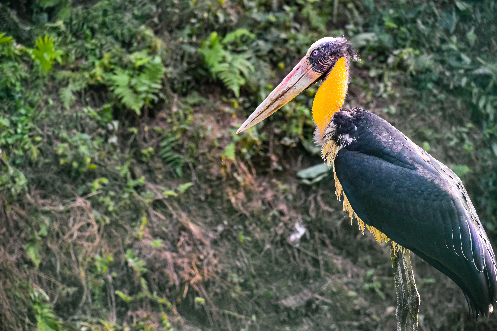

The Lesser Adjutant is a large stork with long legs, a long bill, and a mostly bare head and neck. It is generally less social than many other storks and is often seen standing quietly in wetlands, grasslands, or agricultural areas. It feeds on a wide range of animal matter and plays an important role as a scavenger as well as a predator. It can be distinguished from the larger Greater Adjutant by its smaller size, less massive bill, and different head and neck proportions.